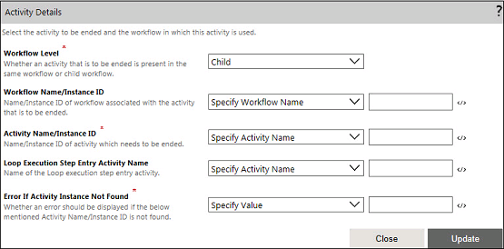

No
Activity Details property window
This topic gives you a detailed understanding of the Activity Details properties. The Activity Details properties are used to specify
To open the Activity Details window, click the Activity Details button.

This window has the following properties:
You can select the activity name from the drop-down field. Alternatively, you can either select the Specify Workflow Name or the Specify Workflow Execution ID option.
Note: If the parent activity is associated with multiple versions of the child workflows that have the same name, all the activities added to these child workflows are listed in this field.
Property Type: Mandatory (This property must be set to end the workflow.)
Yes: If this value is assigned, then the End Activity Execution activity gives an output as "Error encountered" whenever the instance of the activity that is to be executed is not found. In other words, if the activity execution is not yet started or is already completed, then this error is encountered.
No: If this value is assigned, then the End Activity Execution activity will give the output as "Successful".
Specify Value: This option can be used during the runtime execution of the workflow. You can assign the 'Yes' or 'No' values to a variable which will be used to know the value of this property. Alternatively, you can click the expression editor icon and select a variable assigned to the workflow in the expression editor window.
Loop Execution Step Entry Activity: You can use this property to specify the name of the Loop Execution Step Entry activity to which the activity to be ended is associated. This property is required if an instance level of association between the End Activity Execution activity and the activity to be ended is required. If this is not set, the End Activity Execution activity ends all the instances of the activity that is to be ended. This property is mainly used when the For Loop and For-Each-Loop activities are used in a workflow.
Specify Activity Name: Select this option and type the Loop Execution Step Entry activity name in the adjacent field. Alternatively, you can click the expression editor icon and select a variable referring to the required activity in the expression editor window.